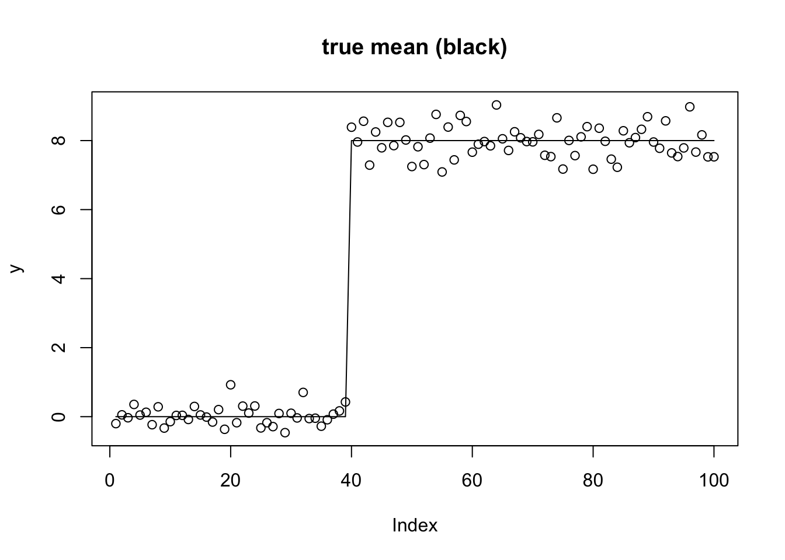
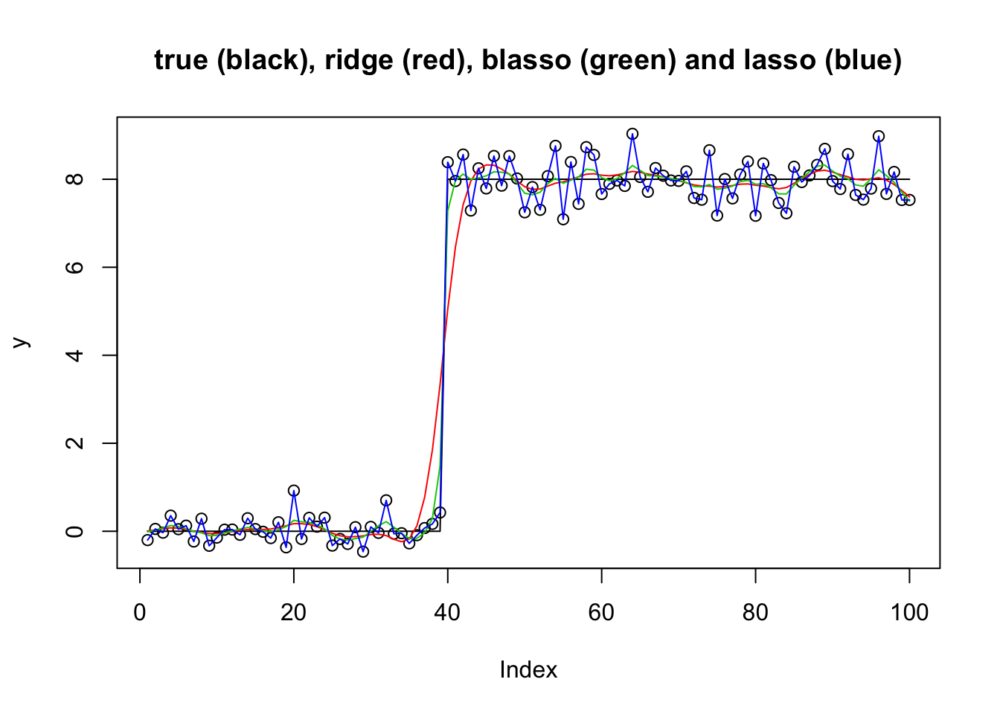
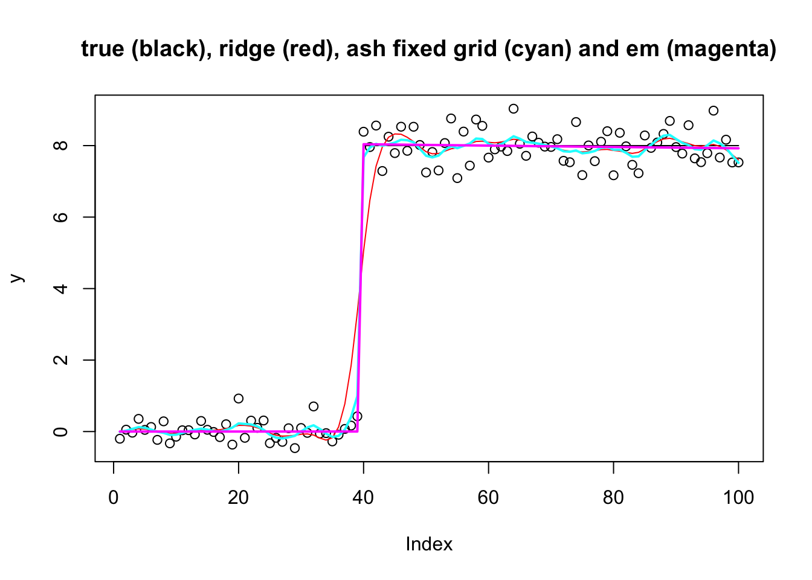
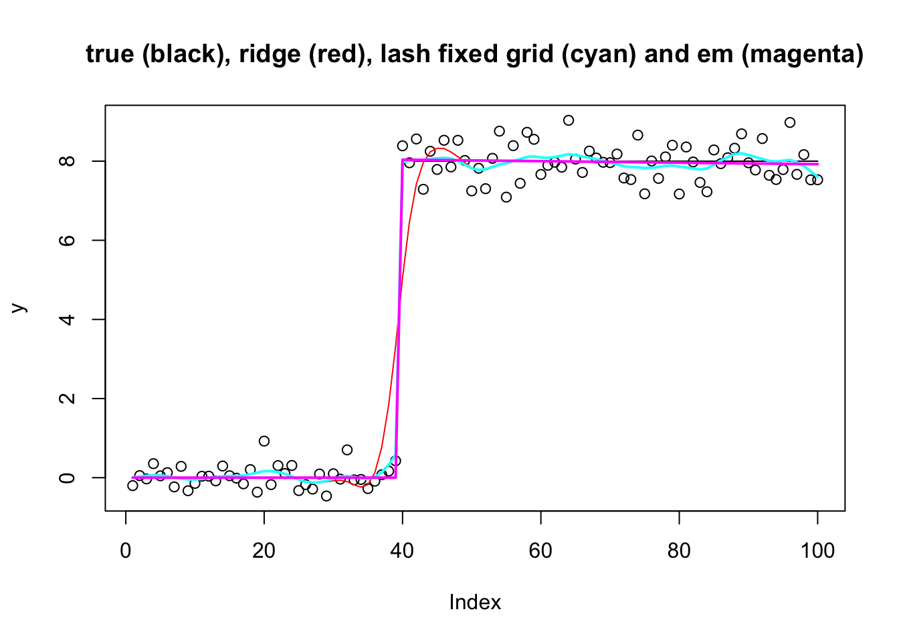
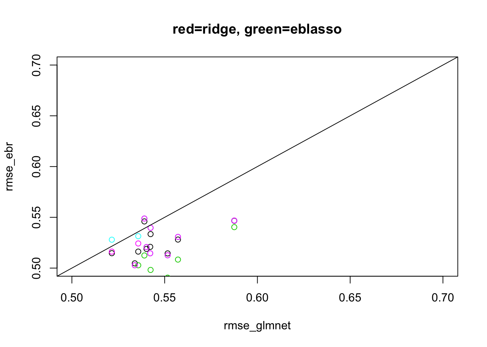

Last updated: 2021-02-19
Checks: 7 0
Knit directory: misc/analysis/
This reproducible R Markdown analysis was created with workflowr (version 1.6.2). The Checks tab describes the reproducibility checks that were applied when the results were created. The Past versions tab lists the development history.
Great! Since the R Markdown file has been committed to the Git repository, you know the exact version of the code that produced these results.
Great job! The global environment was empty. Objects defined in the global environment can affect the analysis in your R Markdown file in unknown ways. For reproduciblity it’s best to always run the code in an empty environment.
The command set.seed(1) was run prior to running the code in the R Markdown file. Setting a seed ensures that any results that rely on randomness, e.g. subsampling or permutations, are reproducible.
Great job! Recording the operating system, R version, and package versions is critical for reproducibility.
Nice! There were no cached chunks for this analysis, so you can be confident that you successfully produced the results during this run.
Great job! Using relative paths to the files within your workflowr project makes it easier to run your code on other machines.
Great! You are using Git for version control. Tracking code development and connecting the code version to the results is critical for reproducibility.
The results in this page were generated with repository version ec45c34. See the Past versions tab to see a history of the changes made to the R Markdown and HTML files.
Note that you need to be careful to ensure that all relevant files for the analysis have been committed to Git prior to generating the results (you can use wflow_publish or wflow_git_commit). workflowr only checks the R Markdown file, but you know if there are other scripts or data files that it depends on. Below is the status of the Git repository when the results were generated:
Ignored files:
Ignored: .DS_Store
Ignored: .Rhistory
Ignored: .Rproj.user/
Ignored: analysis/.RData
Ignored: analysis/.Rhistory
Ignored: analysis/ALStruct_cache/
Ignored: analysis/figure/
Ignored: data/.Rhistory
Ignored: data/pbmc/
Untracked files:
Untracked: .dropbox
Untracked: Icon
Untracked: analysis/GHstan.Rmd
Untracked: analysis/GTEX-cogaps.Rmd
Untracked: analysis/PACS.Rmd
Untracked: analysis/Rplot.png
Untracked: analysis/SPCAvRP.rmd
Untracked: analysis/admm_02.Rmd
Untracked: analysis/admm_03.Rmd
Untracked: analysis/compare-transformed-models.Rmd
Untracked: analysis/cormotif.Rmd
Untracked: analysis/cp_ash.Rmd
Untracked: analysis/eQTL.perm.rand.pdf
Untracked: analysis/eb_prepilot.Rmd
Untracked: analysis/eb_var.Rmd
Untracked: analysis/ebpmf1.Rmd
Untracked: analysis/flash_test_tree.Rmd
Untracked: analysis/flash_tree.Rmd
Untracked: analysis/ieQTL.perm.rand.pdf
Untracked: analysis/lasso_em_03.Rmd
Untracked: analysis/m6amash.Rmd
Untracked: analysis/mash_bhat_z.Rmd
Untracked: analysis/mash_ieqtl_permutations.Rmd
Untracked: analysis/mixsqp.Rmd
Untracked: analysis/mr.ash_lasso_init.Rmd
Untracked: analysis/mr.mash.test.Rmd
Untracked: analysis/mr_ash_modular.Rmd
Untracked: analysis/mr_ash_parameterization.Rmd
Untracked: analysis/mr_ash_pen.Rmd
Untracked: analysis/mr_ash_ridge.Rmd
Untracked: analysis/mv_gaussian_message_passing.Rmd
Untracked: analysis/nejm.Rmd
Untracked: analysis/nmf_bg.Rmd
Untracked: analysis/normal_conditional_on_r2.Rmd
Untracked: analysis/normalize.Rmd
Untracked: analysis/pbmc.Rmd
Untracked: analysis/poisson_transform.Rmd
Untracked: analysis/pseudodata.Rmd
Untracked: analysis/qrnotes.txt
Untracked: analysis/ridge_iterative_02.Rmd
Untracked: analysis/ridge_iterative_splitting.Rmd
Untracked: analysis/samps/
Untracked: analysis/sc_bimodal.Rmd
Untracked: analysis/shrinkage_comparisons_changepoints.Rmd
Untracked: analysis/susie_en.Rmd
Untracked: analysis/susie_z_investigate.Rmd
Untracked: analysis/svd-timing.Rmd
Untracked: analysis/temp.RDS
Untracked: analysis/temp.Rmd
Untracked: analysis/test-figure/
Untracked: analysis/test.Rmd
Untracked: analysis/test.Rpres
Untracked: analysis/test.md
Untracked: analysis/test_qr.R
Untracked: analysis/test_sparse.Rmd
Untracked: analysis/z.txt
Untracked: code/multivariate_testfuncs.R
Untracked: code/rqb.hacked.R
Untracked: data/4matthew/
Untracked: data/4matthew2/
Untracked: data/E-MTAB-2805.processed.1/
Untracked: data/ENSG00000156738.Sim_Y2.RDS
Untracked: data/GDS5363_full.soft.gz
Untracked: data/GSE41265_allGenesTPM.txt
Untracked: data/Muscle_Skeletal.ACTN3.pm1Mb.RDS
Untracked: data/Thyroid.FMO2.pm1Mb.RDS
Untracked: data/bmass.HaemgenRBC2016.MAF01.Vs2.MergedDataSources.200kRanSubset.ChrBPMAFMarkerZScores.vs1.txt.gz
Untracked: data/bmass.HaemgenRBC2016.Vs2.NewSNPs.ZScores.hclust.vs1.txt
Untracked: data/bmass.HaemgenRBC2016.Vs2.PreviousSNPs.ZScores.hclust.vs1.txt
Untracked: data/eb_prepilot/
Untracked: data/finemap_data/fmo2.sim/b.txt
Untracked: data/finemap_data/fmo2.sim/dap_out.txt
Untracked: data/finemap_data/fmo2.sim/dap_out2.txt
Untracked: data/finemap_data/fmo2.sim/dap_out2_snp.txt
Untracked: data/finemap_data/fmo2.sim/dap_out_snp.txt
Untracked: data/finemap_data/fmo2.sim/data
Untracked: data/finemap_data/fmo2.sim/fmo2.sim.config
Untracked: data/finemap_data/fmo2.sim/fmo2.sim.k
Untracked: data/finemap_data/fmo2.sim/fmo2.sim.k4.config
Untracked: data/finemap_data/fmo2.sim/fmo2.sim.k4.snp
Untracked: data/finemap_data/fmo2.sim/fmo2.sim.ld
Untracked: data/finemap_data/fmo2.sim/fmo2.sim.snp
Untracked: data/finemap_data/fmo2.sim/fmo2.sim.z
Untracked: data/finemap_data/fmo2.sim/pos.txt
Untracked: data/logm.csv
Untracked: data/m.cd.RDS
Untracked: data/m.cdu.old.RDS
Untracked: data/m.new.cd.RDS
Untracked: data/m.old.cd.RDS
Untracked: data/mainbib.bib.old
Untracked: data/mat.csv
Untracked: data/mat.txt
Untracked: data/mat_new.csv
Untracked: data/matrix_lik.rds
Untracked: data/paintor_data/
Untracked: data/running_data_chris.csv
Untracked: data/running_data_matthew.csv
Untracked: data/temp.txt
Untracked: data/y.txt
Untracked: data/y_f.txt
Untracked: data/zscore_jointLCLs_m6AQTLs_susie_eQTLpruned.rds
Untracked: data/zscore_jointLCLs_random.rds
Untracked: explore_udi.R
Untracked: output/fit.k10.rds
Untracked: output/fit.varbvs.RDS
Untracked: output/glmnet.fit.RDS
Untracked: output/test.bv.txt
Untracked: output/test.gamma.txt
Untracked: output/test.hyp.txt
Untracked: output/test.log.txt
Untracked: output/test.param.txt
Untracked: output/test2.bv.txt
Untracked: output/test2.gamma.txt
Untracked: output/test2.hyp.txt
Untracked: output/test2.log.txt
Untracked: output/test2.param.txt
Untracked: output/test3.bv.txt
Untracked: output/test3.gamma.txt
Untracked: output/test3.hyp.txt
Untracked: output/test3.log.txt
Untracked: output/test3.param.txt
Untracked: output/test4.bv.txt
Untracked: output/test4.gamma.txt
Untracked: output/test4.hyp.txt
Untracked: output/test4.log.txt
Untracked: output/test4.param.txt
Untracked: output/test5.bv.txt
Untracked: output/test5.gamma.txt
Untracked: output/test5.hyp.txt
Untracked: output/test5.log.txt
Untracked: output/test5.param.txt
Unstaged changes:
Modified: analysis/ash_delta_operator.Rmd
Modified: analysis/ash_pois_bcell.Rmd
Modified: analysis/index.Rmd
Modified: analysis/lasso_em.Rmd
Modified: analysis/minque.Rmd
Modified: analysis/mr_missing_data.Rmd
Modified: analysis/ridge_admm.Rmd
Modified: analysis/vamp_01.Rmd
Note that any generated files, e.g. HTML, png, CSS, etc., are not included in this status report because it is ok for generated content to have uncommitted changes.
These are the previous versions of the repository in which changes were made to the R Markdown (analysis/ebmr_illustration.Rmd) and HTML (docs/ebmr_illustration.html) files. If you’ve configured a remote Git repository (see ?wflow_git_remote), click on the hyperlinks in the table below to view the files as they were in that past version.
| File | Version | Author | Date | Message |
|---|---|---|---|---|
| Rmd | ec45c34 | Matthew Stephens | 2021-02-19 | workflowr::wflow_publish(“ebmr_illustration.Rmd”) |
library(ebmr.alpha)
library(glmnet)Warning: package 'glmnet' was built under R version 3.6.2Loading required package: MatrixLoaded glmnet 4.1The goal here is to illustrate the ebmr.alpha package on some examples.
First I will use the changepoint example with linear trend-filtering basis. I use this as a challenging example, particularly for non-convex methods: the basis is not entirely natural for the changepoint problem and as a result the likelihood surface is very ridged.
set.seed(100)
n = 100
p = n
X = matrix(0,nrow=n,ncol=n)
for(i in 1:n){
X[i:n,i] = 1:(n-i+1)
}
btrue = rep(0,n)
btrue[40] = 8
btrue[41] = -8
s2 = .4
y = X %*% btrue + s2*rnorm(n)
plot(y,main="true mean (black)")
lines(X %*% btrue)
In the ebmr.alpha package the prior on the regression coefficients is determined by the function used to fit the “Empirical Bayes Normal Variances” model (ebnv_fn). We have the following cases implemented:
ebnv_fn = ebnv.pm (point mass prior on w; normal prior on b)ebnv_fn = ebnv.exp (exponential prior on w; Laplace prior on b)ebnv_fn = ebnv.np (non-parametric prior on w; mixture of normals prior on b)ebnv_fn = ebnv.exp_mix (mixture of exponentials prior on w; mixture of Laplaces prior on b)For the mixture priors you can either fix the grid or update the grid each iteration using em updates. (Note: The EM versions do not really “solve” the EBNV problem because they do not find the maximum likelihood solution for the prior: they simply do a single EM iteration to update the prior grid and mixture proportions before computing posteriors.) To make the interface simpler there are helper functions defined for this: ebnv.np.em, ebnv.np.fixgrid, ebnv.exp_mix.em and ebnv.exp_mix.fixgrid.
In addition the “regular lasso” can be obtained by using compute_mode=TRUE with the Laplace prior.
Here are the simplest three methods (Ridge, Blasso and Lasso) with non-mixture priors. You can see that the Lasso overfits, suggesting that the EB approach to selecting the hyperparameters for Lasso maybe does not do so well here.
y.fit.ebr = ebmr(X,y, maxiter = 200, ebnv_fn = ebnv.pm)
y.fit.eblasso = ebmr.update(y.fit.ebr, maxiter = 200, ebnv_fn = ebnv.exp)
y.fit.eblasso.mode = ebmr.update(y.fit.eblasso, maxiter = 200, ebnv_fn = ebnv.exp, compute_mode=TRUE)
plot(y,main="true (black), ridge (red), blasso (green) and lasso (blue)")
lines(X %*% btrue)
lines(X %*% coef(y.fit.ebr), col=2)
lines(X %*% coef(y.fit.eblasso), col=3)
lines(X %*% coef(y.fit.eblasso.mode), col=4)
To get a mixture prior we have to add a prior (to set the grid) before running the methods. This interface may change, but here it is for now. I compare the result with fixed grid vs estimating the grid using EM. You can see the em update finds much better elbo, and also essentially recovers the true solution.
y.fit.ebash.init = ebmr.set.prior(y.fit.eblasso,ebmr.alpha:::exp2np(y.fit.eblasso$g))
y.fit.ebash.em = ebmr.update(y.fit.ebash.init, maxiter = 200, ebnv_fn = ebnv.np.em)
y.fit.ebash.fix = ebmr.update(y.fit.ebash.init, maxiter = 200, ebnv_fn = ebnv.np.fixgrid)
y.fit.ebash.fix$elbo [1] -Inf -149.1742 -149.1742 -173.5210 -170.0211 -168.6862 -168.1280
[8] -167.8527 -167.6959 -167.5993 -167.5371 -167.4957 -167.4667 -167.4453
[15] -167.4283 -167.4141 -167.4014 -167.3896 -167.3782 -167.3669 -167.3553
[22] -167.3432 -167.3303 -167.3163 -167.3008 -167.2833 -167.2630 -167.2391
[29] -167.2104 -167.1751 -167.1310 -167.0749 -167.0029 -166.9107 -166.7949
[36] -166.6567 -166.5056 -166.3592 -166.2357 -166.1446 -166.0844 -166.0480
[43] -166.0271 -166.0156 -166.0094 -166.0061 -166.0044 -166.0036 -166.0031
[50] -166.0029 -166.0028 -166.0027 -166.0027 -166.0026 -166.0026 -166.0026
[57] -166.0026 -166.0026 -166.0026 -166.0026 -166.0026 -166.0026 -166.0026
[64] -166.0026 -142.5156 -138.2147 -134.7036 -131.7616 -128.3173 -128.3172
[71] -128.3172y.fit.ebash.em$elbo [1] -Inf -149.17416 -149.17416 -173.52098 -170.02112 -168.68616
[7] -168.12798 -167.85268 -167.69587 -167.59926 -167.53715 -167.49570
[13] -167.46672 -167.44526 -167.42831 -167.41406 -167.40139 -167.38960
[19] -167.37820 -167.36686 -167.35529 -167.34321 -167.33034 -167.31635
[25] -167.30083 -167.28328 -167.26301 -167.23913 -167.21041 -167.17515
[31] -167.13103 -167.07495 -167.00295 -166.91068 -166.79489 -166.65673
[37] -166.50562 -166.35918 -166.23568 -166.14457 -166.08445 -166.04796
[43] -166.02707 -166.01556 -166.00939 -166.00614 -166.00444 -166.00356
[49] -166.00310 -166.00287 -166.00275 -166.00269 -166.00266 -166.00265
[55] -166.00264 -166.00264 -166.00263 -166.00263 -166.00263 -166.00263
[61] -166.00263 -166.00263 -166.00263 -166.00263 -132.66074 -110.77197
[67] -95.74083 -87.45071 -83.25759 -80.79295 -79.11300 -77.95790
[73] -77.17485 -76.64434 -76.28268 -76.03381 -75.86054 -75.73809
[79] -75.65000 -75.58534 -75.53688 -75.49980 -75.47087 -75.44788
[85] -75.42931 -75.41409 -75.40143 -75.39078 -75.38172 -75.37395
[91] -75.36720 -75.36132 -75.35614 -75.35155 -75.34746 -75.34380
[97] -75.34051 -75.33753 -75.33482 -75.33235 -75.33009 -75.32801
[103] -75.32610 -75.32433 -75.32269 -75.32117 -75.31976 -75.31843
[109] -75.31720 -75.31604 -75.31495 -75.31393 -75.31296 -75.31205
[115] -75.31120 -75.31038 -75.30961 -75.30888 -75.30818 -75.30752
[121] -75.30689 -75.30629 -75.30572 -75.30517 -75.30464 -75.30414
[127] -75.30366 -75.30320 -75.30276 -75.30233 -75.30192 -75.30153
[133] -75.30115 -75.30078 -75.30043 -75.30009 -75.29977 -75.29945
[139] -75.29915 -75.29885 -75.29856 -75.29829 -75.29802 -75.29776
[145] -75.29751 -75.29727 -75.29703 -75.29680 -75.29658 -75.29636
[151] -75.29615 -75.29595 -75.29575 -75.29555 -75.29537 -75.29518
[157] -75.29500 -75.29483 -75.29466 -75.29450 -75.29433 -75.29418
[163] -75.29402 -75.29387 -75.29373 -75.29359 -75.29345 -75.29331
[169] -75.29318 -75.29305 -75.29292 -75.29279 -75.29267 -75.29255
[175] -75.29244 -75.29232 -75.29221 -75.29210 -75.29199 -75.29189
[181] -75.29179 -75.29169 -75.29159 -75.29149 -75.29139 -75.29130
[187] -75.29121 -75.29112 -75.29103 -75.29094 -75.29086 -75.29078
[193] -75.29069 -75.29061 -75.29053 -75.29046 -75.29038 -75.29030
[199] -75.29023 -75.29016 -75.29009 -75.29002 -75.28995 -75.28988
[205] -75.28981 -75.28975 -75.28968 -75.28962 -75.28956 -75.28949
[211] -75.28943 -75.28937 -75.28931 -75.28926 -75.28920 -75.28914
[217] -75.28909 -75.28903 -75.28898 -75.28893 -75.28887 -75.28882
[223] -75.28877 -75.28872 -75.28867 -75.28862 -75.28858 -75.28853
[229] -75.28848 -75.28844 -75.28839 -75.28834 -75.28830 -75.28826
[235] -75.28821 -75.28817 -75.28813 -75.28809 -75.28805 -75.28801
[241] -75.28797 -75.28793 -75.28789 -75.28785 -75.28781 -75.28777
[247] -75.28774 -75.28770 -75.28766 -75.28763 -75.28759 -75.28756
[253] -75.28752 -75.28749 -75.28746 -75.28742 -75.28739 -75.28736
[259] -75.28732 -75.28729 -75.28726 -75.28723 -75.28720 -75.28717plot(y,main="true (black), ridge (red), ash fixed grid (cyan) and em (magenta)")
lines(X %*% btrue)
lines(X %*% coef(y.fit.ebr), col=2)
lines(X %*% coef(y.fit.ebash.fix), col=5,lwd=2)
lines(X %*% coef(y.fit.ebash.em), col=6, lwd=2)
Similarly we can use a mixture of laplaces for the prior, with either EM update or fixed grid. Again the em update finds much better elbo, and also essentially recovers the true solution.
y.fit.eblash.init = ebmr.set.prior(y.fit.eblasso,ebmr.alpha:::exp2np(y.fit.eblasso$g))
y.fit.eblash.em = ebmr.update(y.fit.eblash.init, maxiter = 200, ebnv_fn = ebnv.exp_mix.em)
y.fit.eblash.fix = ebmr.update(y.fit.eblash.init, maxiter = 200, ebnv_fn = ebnv.exp_mix.fixgrid)
y.fit.eblash.fix$elbo [1] -Inf -149.1742 -149.1742 -173.5210 -170.0211 -168.6862 -168.1280
[8] -167.8527 -167.6959 -167.5993 -167.5371 -167.4957 -167.4667 -167.4453
[15] -167.4283 -167.4141 -167.4014 -167.3896 -167.3782 -167.3669 -167.3553
[22] -167.3432 -167.3303 -167.3163 -167.3008 -167.2833 -167.2630 -167.2391
[29] -167.2104 -167.1751 -167.1310 -167.0749 -167.0029 -166.9107 -166.7949
[36] -166.6567 -166.5056 -166.3592 -166.2357 -166.1446 -166.0844 -166.0480
[43] -166.0271 -166.0156 -166.0094 -166.0061 -166.0044 -166.0036 -166.0031
[50] -166.0029 -166.0028 -166.0027 -166.0027 -166.0026 -166.0026 -166.0026
[57] -166.0026 -166.0026 -166.0026 -166.0026 -166.0026 -166.0026 -166.0026
[64] -166.0026 -158.9146 -152.9884 -150.4794 -148.7849 -147.2660 -145.7075
[71] -144.7154 -143.3628 -142.7717 -140.6747 -140.1784 -140.0572 -140.0271
[78] -140.0196 -140.0177 -140.0172 -140.0171 -140.0170 -140.0170 -140.0170
[85] -140.0170 -140.0170 -140.0170 -140.0170y.fit.eblash.em$elbo [1] -Inf -149.1742 -149.1742 -173.5210 -170.0211 -168.6862 -168.1280
[8] -167.8527 -167.6959 -167.5993 -167.5371 -167.4957 -167.4667 -167.4453
[15] -167.4283 -167.4141 -167.4014 -167.3896 -167.3782 -167.3669 -167.3553
[22] -167.3432 -167.3303 -167.3163 -167.3008 -167.2833 -167.2630 -167.2391
[29] -167.2104 -167.1751 -167.1310 -167.0749 -167.0029 -166.9107 -166.7949
[36] -166.6567 -166.5056 -166.3592 -166.2357 -166.1446 -166.0844 -166.0480
[43] -166.0271 -166.0156 -166.0094 -166.0061 -166.0044 -166.0036 -166.0031
[50] -166.0029 -166.0028 -166.0027 -166.0027 -166.0026 -166.0026 -166.0026
[57] -166.0026 -166.0026 -166.0026 -166.0026 -166.0026 -166.0026 -166.0026
[64] -166.0026 -157.7475 -142.2218 -128.0311 -117.8529 -112.2631 -109.2260
[71] -107.2445 -105.8703 -104.9310 -104.2941 -103.8611 -103.5646 -103.3593
[78] -103.2152 -103.1122 -103.0373 -102.9816 -102.9393 -102.9066 -102.8807
[85] -102.8600 -102.8431 -102.8292 -102.8175 -102.8076 -102.7992 -102.7919
[92] -102.7855 -102.7800 -102.7751 -102.7707 -102.7668 -102.7633 -102.7602
[99] -102.7573 -102.7547 -102.7523 -102.7501 -102.7481 -102.7463 -102.7445
[106] -102.7430 -102.7415 -102.7401 -102.7388 -102.7376 -102.7365 -102.7354
[113] -102.7344 -102.7335 -102.7326 -102.7317 -102.7309 -102.7302 -102.7295
[120] -102.7288 -102.7281 -102.7275 -102.7269 -102.7264 -102.7258 -102.7253
[127] -102.7248 -102.7243 -102.7239 -102.7234 -102.7230 -102.7226 -102.7222
[134] -102.7219 -102.7215 -102.7212 -102.7208 -102.7205 -102.7202 -102.7199
[141] -102.7196 -102.7193 -102.7190 -102.7188 -102.7185 -102.7183 -102.7180
[148] -102.7178 -102.7176 -102.7173 -102.7171 -102.7169 -102.7167 -102.7165
[155] -102.7163 -102.7161 -102.7160 -102.7158 -102.7156 -102.7155 -102.7153
[162] -102.7151 -102.7150 -102.7148 -102.7147 -102.7145 -102.7144 -102.7142
[169] -102.7141 -102.7140 -102.7138 -102.7137 -102.7136 -102.7135 -102.7134
[176] -102.7132 -102.7131 -102.7130 -102.7129 -102.7128 -102.7127 -102.7126
[183] -102.7125 -102.7124 -102.7123 -102.7122 -102.7121 -102.7120 -102.7119
[190] -102.7118 -102.7118 -102.7117 -102.7116 -102.7115 -102.7114 -102.7114
[197] -102.7113 -102.7112 -102.7111 -102.7111 -102.7110 -102.7109 -102.7108
[204] -102.7108 -102.7107 -102.7106 -102.7106 -102.7105 -102.7104 -102.7104
[211] -102.7103 -102.7103 -102.7102 -102.7101 -102.7101 -102.7100 -102.7100
[218] -102.7099 -102.7099 -102.7098 -102.7098 -102.7097 -102.7097 -102.7096
[225] -102.7096 -102.7095 -102.7095 -102.7094 -102.7094 -102.7093 -102.7093
[232] -102.7092 -102.7092 -102.7091 -102.7091 -102.7090 -102.7090 -102.7090
[239] -102.7089 -102.7089 -102.7088 -102.7088 -102.7088 -102.7087 -102.7087
[246] -102.7086 -102.7086 -102.7086 -102.7085 -102.7085 -102.7085 -102.7084
[253] -102.7084 -102.7084 -102.7083 -102.7083 -102.7083 -102.7082 -102.7082
[260] -102.7082 -102.7081 -102.7081 -102.7081 -102.7080plot(y,main="true (black), ridge (red), lash fixed grid (cyan) and em (magenta)")
lines(X %*% btrue)
lines(X %*% coef(y.fit.ebr), col=2)
lines(X %*% coef(y.fit.eblash.fix), col=5,lwd=2)
lines(X %*% coef(y.fit.eblash.em), col=6, lwd=2)
This is another situation where we have seen mr.ash does poorly, here.
Here I run the ebmr methods for max 20 iterations to keep compute time down.
set.seed(123)
n <- 500
p <- 1000
p_causal <- 500 # number of causal variables (simulated effects N(0,1))
pve <- 0.95
nrep = 10
rmse_ebr = rep(0,nrep)
rmse_glmnet = rep(0,nrep)
rmse_eblasso= rep(0,nrep)
rmse_ebash.fix = rep(0,nrep)
rmse_ebash.em = rep(0,nrep)
for(i in 1:nrep){
sim=list()
sim$X = matrix(rnorm(n*p,sd=1),nrow=n)
B <- rep(0,p)
causal_variables <- sample(x=(1:p), size=p_causal)
B[causal_variables] <- rnorm(n=p_causal, mean=0, sd=1)
sim$B = B
sim$Y = sim$X %*% sim$B
sigma2 = ((1-pve)/(pve))*sd(sim$Y)^2
E = rnorm(n,sd = sqrt(sigma2))
sim$Y = sim$Y + E
fit.glmnet <- cv.glmnet(x=sim$X, y=sim$Y, family="gaussian", alpha=1, standardize=FALSE)
fit.ebr = ebmr(sim$X,sim$Y, maxiter = 20, ebnv_fn = ebnv.pm)
fit.eblasso = ebmr.update(fit.ebr, maxiter = 20, ebnv_fn = ebnv.exp)
fit.ebash.init = ebmr.set.prior(fit.eblasso,ebmr.alpha:::exp2np(y.fit.eblasso$g))
fit.ebash.em = ebmr.update(fit.ebash.init, maxiter = 20, ebnv_fn = ebnv.np.em)
fit.ebash.fix = ebmr.update(fit.ebash.init, maxiter = 20, ebnv_fn = ebnv.np.fixgrid)
#rmse_mrash[i] = sqrt(mean((sim$B-fit_mrash$beta)^2))
#rmse_mrash_fixprior[i] = sqrt(mean((sim$B-fit_mrash_fixprior$beta)^2))
rmse_glmnet[i] = sqrt(mean((sim$B-coef(fit.glmnet)[-1])^2))
rmse_ebr[i] = sqrt(mean((sim$B-coef(fit.ebr))^2))
rmse_eblasso[i] = sqrt(mean((sim$B-coef(fit.eblasso))^2))
rmse_ebash.fix[i] = sqrt(mean((sim$B-coef(fit.ebash.fix))^2))
rmse_ebash.em[i] = sqrt(mean((sim$B-coef(fit.ebash.em))^2))
}
plot(rmse_glmnet, rmse_ebr, xlim=c(0.5,0.7), ylim=c(0.5,0.7), main="red=ridge, green=eblasso")
points(rmse_glmnet,rmse_eblasso,col=3)
points(rmse_glmnet,rmse_ebash.fix,col=5)
points(rmse_glmnet,rmse_ebash.em,col=6)
abline(a=0,b=1)
sessionInfo()R version 3.6.0 (2019-04-26)
Platform: x86_64-apple-darwin15.6.0 (64-bit)
Running under: macOS 10.16
Matrix products: default
BLAS: /Library/Frameworks/R.framework/Versions/3.6/Resources/lib/libRblas.0.dylib
LAPACK: /Library/Frameworks/R.framework/Versions/3.6/Resources/lib/libRlapack.dylib
locale:
[1] en_US.UTF-8/en_US.UTF-8/en_US.UTF-8/C/en_US.UTF-8/en_US.UTF-8
attached base packages:
[1] stats graphics grDevices utils datasets methods base
other attached packages:
[1] glmnet_4.1 Matrix_1.2-18 ebmr.alpha_0.2.6
loaded via a namespace (and not attached):
[1] Rcpp_1.0.6 pillar_1.4.6 compiler_3.6.0 later_1.1.0.1
[5] git2r_0.27.1 workflowr_1.6.2 R.methodsS3_1.8.0 R.utils_2.10.1
[9] iterators_1.0.12 tools_3.6.0 digest_0.6.27 evaluate_0.14
[13] lifecycle_0.2.0 tibble_3.0.4 lattice_0.20-41 pkgconfig_2.0.3
[17] rlang_0.4.8 foreach_1.5.0 rstudioapi_0.11 yaml_2.2.1
[21] mvtnorm_1.1-1 xfun_0.16 stringr_1.4.0 knitr_1.29
[25] fs_1.5.0 vctrs_0.3.4 rprojroot_1.3-2 grid_3.6.0
[29] glue_1.4.2 R6_2.4.1 survival_3.2-3 rmarkdown_2.3
[33] mixsqp_0.3-43 irlba_2.3.3 magrittr_1.5 whisker_0.4
[37] splines_3.6.0 backports_1.1.10 promises_1.1.1 codetools_0.2-16
[41] ellipsis_0.3.1 htmltools_0.5.0 shape_1.4.4 httpuv_1.5.4
[45] stringi_1.4.6 crayon_1.3.4 R.oo_1.23.0